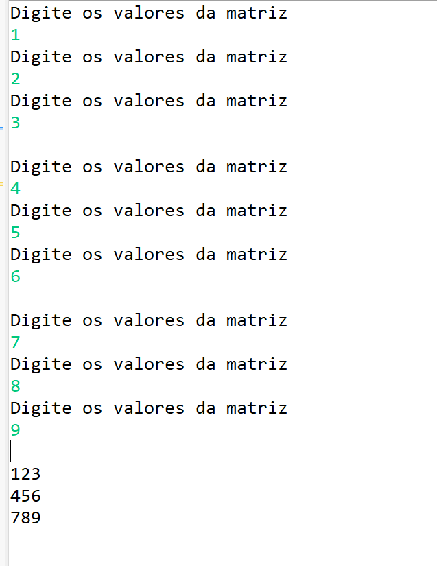

Um programa com um pequeno menu onde foi utilizado a estrutura "WHILE" e "CASE" para o programa responder o comando solicitado.

Um programa que fez a tabuada de um número qualquer inteiro que será digitado pelo usuário, mas a tabuada não deve necessariamente iniciar em 1 e terminar em 10, o valor inicial e final devem ser informados também pelo usuário. Para isso, utilizei a estrutura while e for juntas.
Um programa que criou uma matriz de acordo com os valores digitados pelo usario.
Um programa que criou uma matriz e foi usado uma estrutura de repetição "for" para imprimir o conteúdo da matriz.